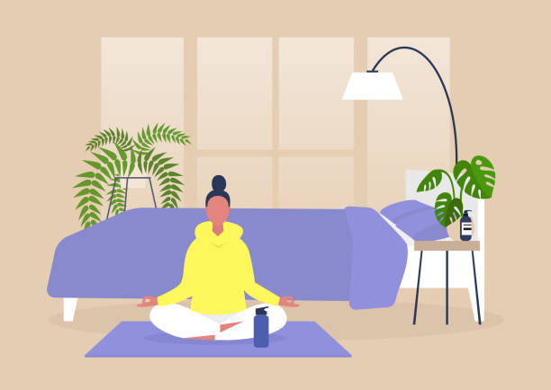
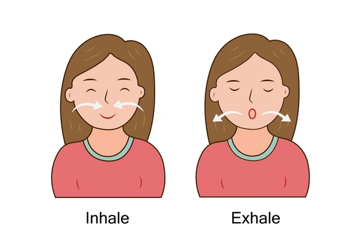

Life gets hectic, and sometimes it feels like there is no room to breathe—literally. Between work, family, and endless to-do lists, it's easy to feel overwhelmed. But what if you could reset your mind, reduce stress, and regain clarity in just 5 minutes a day? Yes, really—just five.
Whether you're a full-time professional, a stay-at-home parent, or juggling both, finding moments of stillness can be powerful. Meditation does not require a candle-lit room, an hour of silence, or a guru in a robe. All it takes is intention and consistency.
🌱 Why Even 5 Minutes Matters

A common misconception is that meditation has to be long to be effective. But studies have shown that even short daily sessions can:
- Lower stress levels
- Improve focus and decision-making
- Boost mood and emotional regulation
- Help you sleep better
- Reduce anxiety
🧘 What You will Need (Spoiler: Not Much)
You do not need fancy equipment or a special app (though they can help if you like). All you need is:
- A quiet-ish space (even your parked car works!)
- A timer (your phone is fine)
- A willingness to pause and breathe
🕐 The 5-Minute Routine (Step-by-Step)
- 1. Find a Comfortable Seat: Sit on a chair or cushion with a relaxed spine.
- 2. Set a Timer: Use a gentle chime for 5 minutes.
- 3. Close Your Eyes: Or simply soften your gaze.
- 4. Focus on Breathing: Try inhale 4, hold 2, exhale 6 counts.
- 5. Gently Refocus: When thoughts wander, come back to your breath.
- 6. End with Gratitude: Take a deep breath and smile—you're done!
🌿 Tips to Make It Stick
- Same time, same place: Create a ritual before bed or after waking up.
- Habit stacking: Pair it with brushing teeth or morning coffee.
- Use guided meditations: Apps like Calm or Insight Timer are great helpers.
💬 Final Thoughts
You do not need to escape to a mountain or become a monk to feel peace. Sometimes, just five minutes a day can be your anchor in the middle of chaos. Try it for a week—see how your energy, focus, and even your interactions shift.
You deserve a moment to breathe. 🌬️💚